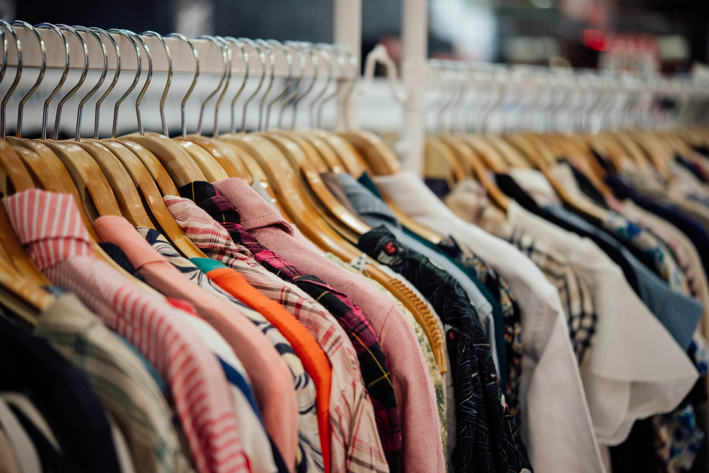

Sobre nós Nos últimos dois anos, em meio a pandemia de COVID-19, o e-commerce cresceu vertiginosamente. Somente em 2020, o crescimento das vendas via comércio eletrônico foi de 49%, e a tendência é só aumentar. Os principais segmentos responsáveis por esta elevação são o de moda, de alimentos e de serviços. Dentro do setor “moda”, o destaque foi a venda de calçados. Existe espaço para a venda on-line de vestuário e acessórios, mas a experiência atual do consumidor cria entraves para isto. Comprar roupas e acessórios pela internet ainda gera muitas insatisfações. Grande parte delas estão relacionadas a falta de melhores informações sobre o produto e a impossibilidade de experimentá-las. Além disto, uma vez que a compra foi efetuada, se for necessário trocar, existe muito desgaste e perda de tempo, o que resulta na péssima experiência do cliente e na desistência, por parte dele, em realizar compras futuras via internet. Além disto, pode gerar um marketing negativo para a marca/loja, o que resultaria na perda de novos clientes. De acordo com consumidores entrevistados, a única informação segura que eles possuem em relação ao produto está na opinião de pessoas que deixam sua avaliação em compras realizadas. Apesar do alto número de reclamações e da queda no índice de satisfação, é possível embasar soluções para a redução de experiências negativas em compras. Os dois lados (vendedor e comprador) só teriam a ganhar. Por um lado, o comprador teria acesso a mais um meio de comprar roupas e acessórios, de forma mais acessível e/ou barata, sem precisar se deslocar para buscar a peça, no conforto de sua casa. Por outro, o vendedor conseguiria planejar melhor seu estoque, produzindo ou comprando de acordo com a necessidade (por ser uma “venda casada”), diminuindo a chance de falta de produtos e/ou excesso, melhorando seu lucro.
